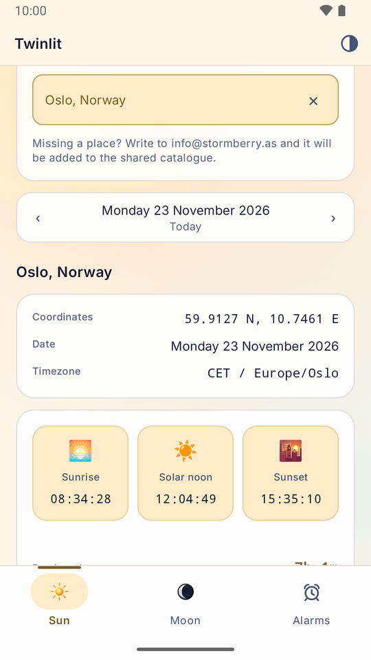
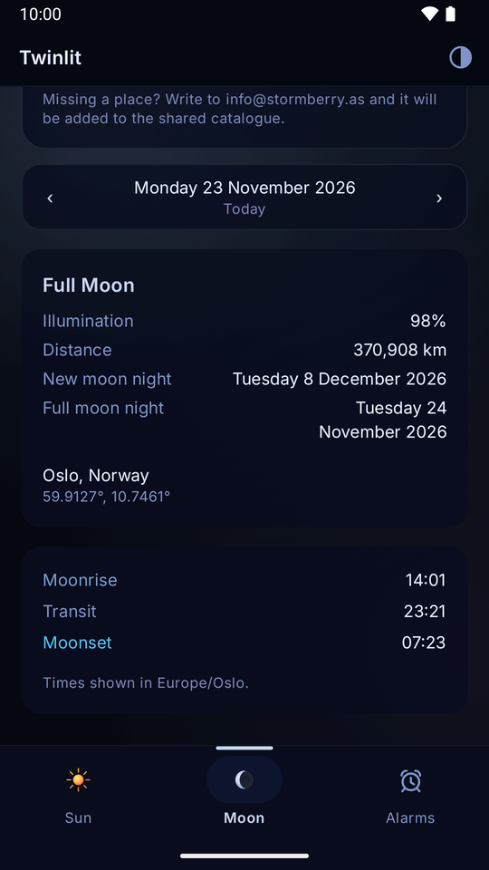
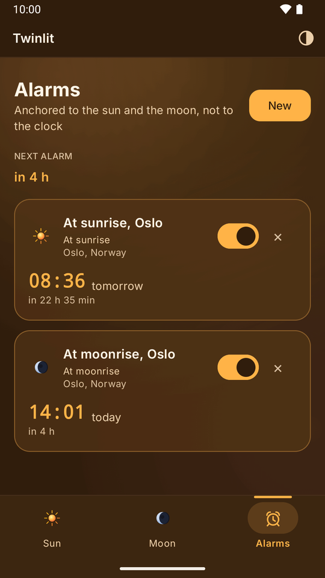
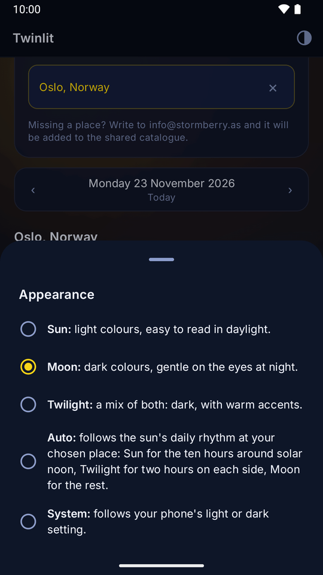

An alarm clock that follows the sun and the moon
Set an alarm for half an hour before sunrise, at moonrise, or on the full moon night, and Twinlit works out the time again every day as the seasons and the moon move. When you build an alarm it shows you its real times before you save it.
It also calculates sunrise, solar noon and sunset, the moon's phase, moonrise, transit and moonset, for any place on Earth, in that place's own timezone, and says plainly when the sun or the moon does not rise or set at all.
Android app: free, with no account and no ads.
The Zapstore and Google Play listings open soon.
Three tabs, one list of alarms
- SunSunrise, solar noon and sunset, and the length of the day, for any date and any place. Midnight Sun and Polar Night are said plainly.
- MoonThe moon's phase, how much of it is lit and how far away it is, moonrise, transit and moonset, and the dates of the next new moon night and full moon night.
- AlarmsOne list for sun and moon events. Each alarm has a time before or after the event, snooze, optional earliest and latest limits, and a place of its own.
- AppearanceSun, Moon, Twilight, Auto or System. Auto follows the sun's daily rhythm at your chosen place: Sun for the ten hours around solar noon, Twilight for two hours on each side, Moon for the rest.
Six home screen widgets show the next sunrise or sunset, today's sun times and today's moon with its phase and times. The large widgets add golden hour and the three twilights for the sun, and the dates of the next new moon, first quarter, full moon and last quarter for the moon.
What it looks like




Runs entirely on your device
Twinlit has no network access, no location permission, no tracking and no Google services. The app declares no INTERNET permission, so it cannot send anything. Places come from a catalogue of 25,007 cities that is part of the app, or from coordinates you type.
The nine permissions Android lists for Twinlit are all for the alarms: to ring on time, to show the alarm over the lock screen, to keep ringing while the screen is off, and to set your alarms again after a restart. Sun and moon times need none of them, and nothing is asked until you create your first alarm.
It replaces SunApp and MoonApp
Twinlit puts the Android apps SunApp and MoonApp, and the alarms of both, in one app. Places and alarms from those apps are not carried over, because Android keeps each app's data to itself. The web versions stay where they are: SunApp and MoonApp.
Twinlit is a functioning prototype by Stormberry AS, Norway. The source code is on GitHub (opens in a new tab).